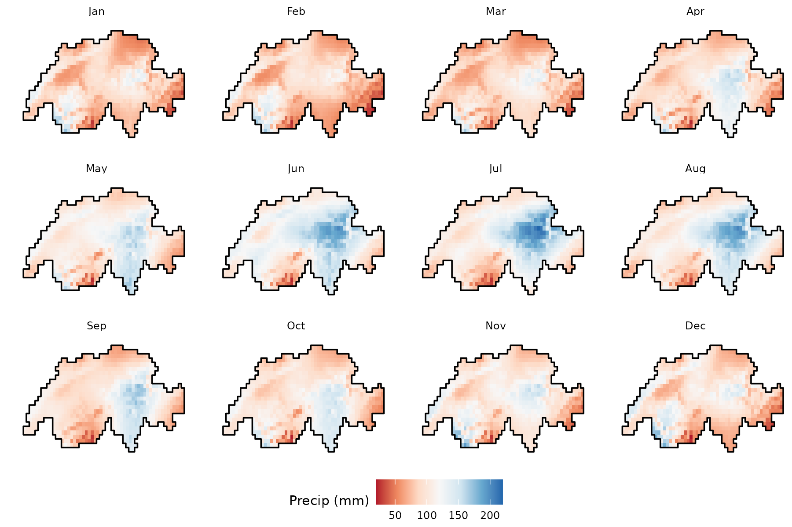
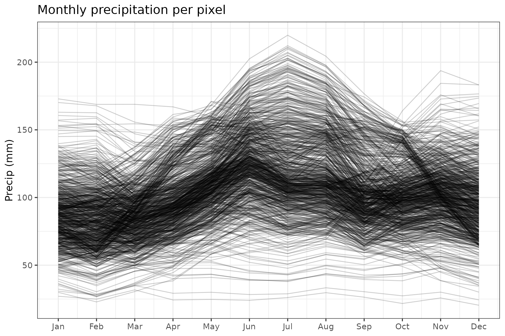
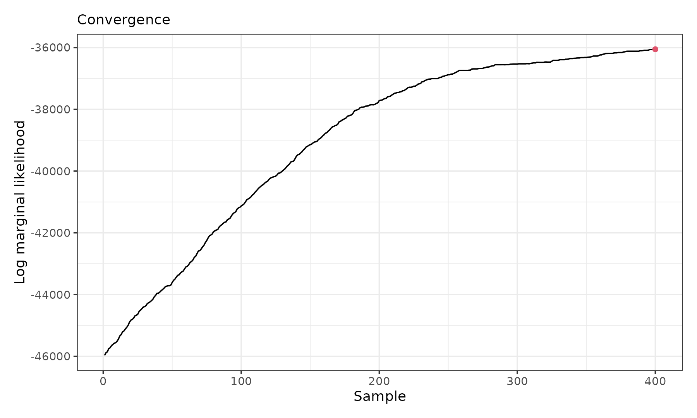
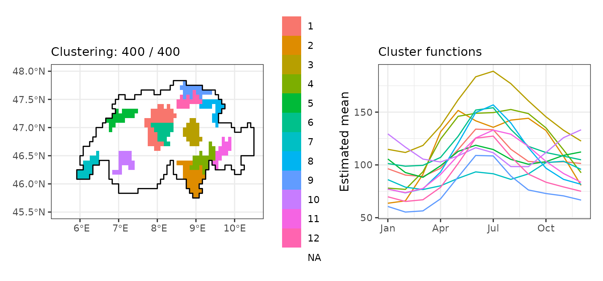
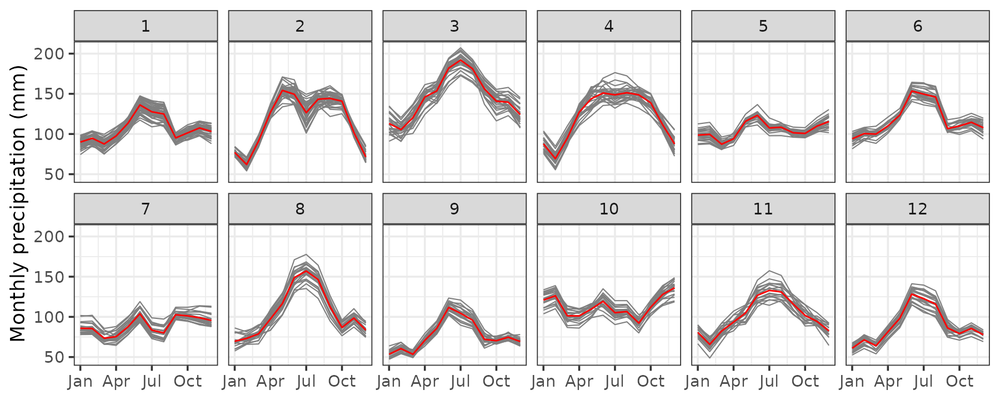

Average seasonal precipitation in Switzerland
Source:vignettes/articles/vg14-precip-switzerland.Rmd
vg14-precip-switzerland.RmdIn this vignette, we use sfclust to cluster regions with
similar average seasonal patterns between 1970-2000 in Switzerland.
Load packages and data
The data is a stars cube with monthly precipitation
(prec) for 823 valid grid cells across Switzerland,
obtained from WorldClim via the geodata package, aggregated
to a coarser ~5km resolution, and masked to the Swiss national boundary;
the month dimension is a plain integer (1-12) rather than a
calendar date, since the data are 30-year monthly averages, not
observations from a specific year. It is available on our GitHub
repository: https://github.com/ErickChacon/sfclust/blob/main/tools/data/cheprec.rds.
link <- "https://github.com/ErickChacon/sfclust/blob/main/tools/data/"
cheprec <- readRDS(gzcon(url(paste0(link, "cheprec.rds?raw=true"))))
cheprec#> stars object with 3 dimensions and 1 attribute
#> attribute(s):
#> Min. 1st Qu. Median Mean 3rd Qu. Max. NAs
#> prec 20.41 83.055 100.04 102.9409 119.065 219.92 11724
#> dimension(s):
#> from to offset delta refsys x/y
#> x 1 60 5.5 0.08333 WGS 84 [x]
#> y 1 30 48 -0.08333 WGS 84 [y]
#> month 1 12 1 1 NAExploratory analysis
We start by visualizing the raw monthly precipitation across the grid, adding a boundary that limits our area of study.
pixel_boundary <- st_as_stars(cheprec["prec", , , 1]) |>
st_as_sf(as_points = FALSE, na.rm = TRUE) |>
st_union()
ggplot() +
geom_stars(aes(fill = prec), data = cheprec) +
geom_sf(data = pixel_boundary, fill = NA, color = "black", linewidth = 0.5) +
facet_wrap(~ factor(month, labels = month.abb), ncol = 4) +
scale_fill_distiller(palette = "RdBu", direction = 1, na.value = NA) +
labs(fill = "Precip (mm)") +
coord_sf() +
theme_void(base_size = 9) +
theme(legend.position = "bottom")#> Warning: Removed 11724 rows containing missing values or values outside the scale range
#> (`geom_raster()`).
We can also plot the pixel-level time series, where different profiles can be observed, many with peaks in July while others with a flat pattern:
ggplot(data.frame(cheprec), aes(month, prec, group = interaction(x, y))) +
geom_line(alpha = 0.2, linewidth = 0.4) +
scale_x_continuous(breaks = 1:12, labels = month.abb) +
labs(title = "Monthly precipitation per pixel", x = NULL, y = "Precip (mm)") +
theme_bw()#> Warning: Removed 11724 rows containing missing values or values outside the scale range
#> (`geom_line()`).
Model fitting
As we are modelling the average seasonal precipitation, we need a flexible and cyclic representation for the within-cluster model. In this case, we represent the within cluster mean as a linear combination of periodic B-spline basis functions , built with the pbs package, which enforces that the fitted curve and its derivative have a cyclic pattern at January and December (cell , month ):
For a raster stars cube, sfclust() builds
the spatial adjacency graph automatically and excludes NA
cells. However, the spatial dimensions (spnames) should be
explicitly given. We initialize with one cluster per grid cell
(nclust = 823) and let the algorithm merge similar
cells:
set.seed(7)
formula <- prec ~ pbs(month, df = 5, Boundary.knots = c(0.5, 12.5))
result <- sfclust(
cheprec, nclust = 823, spnames = c("x", "y"), formula = formula,
niter = 4000, thin = 10, nmessage = 100, nsave = 1000,
path_save = "cheprec-mcmc.rds"
)
result#> Within-cluster formula:
#> prec ~ pbs(month, df = 5, Boundary.knots = c(0.5, 12.5))
#>
#> Clustering hyperparameters:
#> log(1-q) birth death change hyper
#> -0.6931472 0.4250000 0.4250000 0.1000000 0.0500000
#>
#> Clustering movement counts:
#> births deaths changes hypers
#> 79 805 83 195
#>
#> Log marginal likelihood (sample 400 out of 400): -36054.85Starting from 823 singleton clusters, the algorithm performed 805 merges against only 79 splits, consolidating the initial cells into 96 clusters. The marginal likelihood reached a value of -36,054.8. After thinning, 400 samples were retained.
Results
According to the summary() output, the ten largest
clusters together cover about 30% of the 823 grid cells. The largest
clusters contain 44, 36, and 24 pixels, respectively.
summary(result, sort = TRUE)#> Summary for clustering sample 400 out of 400
#>
#> Within-cluster formula:
#> prec ~ pbs(month, df = 5, Boundary.knots = c(0.5, 12.5))
#>
#> Counts per cluster:
#> 1 2 3 4 5 6 7 8 9 10 11 12 13 14 15 16 17 18 19 20 21 22 23 24 25 26
#> 44 36 24 24 22 22 21 20 19 19 18 17 17 17 17 17 16 15 15 15 14 13 13 13 13 12
#> 27 28 29 30 31 32 33 34 35 36 37 38 39 40 41 42 43 44 45 46 47 48 49 50 51 52
#> 12 12 12 11 10 10 10 10 10 9 9 8 8 8 7 7 7 6 6 6 6 6 6 6 6 6
#> 53 54 55 56 57 58 59 60 61 62 63 64 65 66 67 68 69 70 71 72 73 74 75 76 77 78
#> 6 5 5 5 5 4 4 4 4 4 4 4 4 4 4 3 3 3 3 3 2 2 2 2 2 2
#> 79 80 81 82 83 84 85 86 87 88 89 90 91 92 93 94 95 96
#> 2 2 2 2 2 1 1 1 1 1 1 1 1 1 1 1 1 1
#>
#> Log marginal likelihood: -36054.85The progress of the log marginal-likelihood shows improvement through the iterations, with more stabilization around the end. In practice, you will want to run the chain longer.
plot(result, which = 3)
The figure below shows the twelve largest clusters over the grid and their fitted functional shapes:
gg1 <- plot_clusters_map(result, sort = TRUE, clusters = 1:12, legend = TRUE) +
geom_sf(data = pixel_boundary, fill = NA, color = "black", linewidth = 0.5) +
labs(x = NULL, y = NULL) +
scale_fill_hue(na.value = NA)
gg2 <- plot_clusters_fitted(result, sort = TRUE, clusters = 1:12) +
scale_x_continuous(breaks = seq(1, 12, 3), labels = month.abb[seq(1, 12, 3)])
gg1 + gg2#> Warning: Removed 1514 rows containing missing values or values outside the scale range
#> (`geom_raster()`).
The fitted precipitation cycles here differ genuinely in shape: some clusters show a single smooth peak in mid-summer at markedly different amplitudes, some are comparatively flat with only a mild summer rise, and others are distinctly bimodal, with a secondary rise toward the end of the year.
Empirical precipitation per cluster
Finally, we visualize the raw pixel-level precipitation within each of the twelve largest clusters, confirming that grid cells assigned to the same cluster share a consistent seasonal shape, including the less common bimodal pattern of some clusters, while the amplitude and timing of the peak vary substantially across clusters.
plot_clusters_series(result, prec, sort = TRUE, clusters = 1:12) +
facet_wrap(~ cluster, ncol = 6) +
scale_x_continuous(breaks = seq(1, 12, 3), labels = month.abb[seq(1, 12, 3)]) +
labs(y = "Monthly precipitation (mm)")